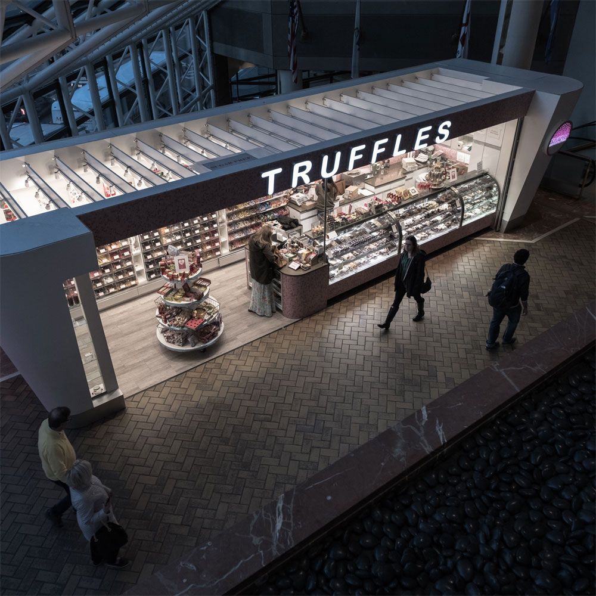

learn more

Unit 0: Turtle
With supporting text below as a natural lead-in to additional content. A small river named Duden flows by their place and supplies it with the necessary regelialia. It is a paradisematic country, in which roasted parts of sentences fly into.
Go somewhere
data science interaction
Unit 1: Data Science
With supporting text below as a natural lead-in to additional content. A small river named Duden flows by their place and supplies it with the necessary regelialia. It is a paradisematic country, in which roasted parts of sentences fly into.
Go somewhereUnit 2: Games
With supporting text below as a natural lead-in to additional content. A small river named Duden flows by their place and supplies it with the necessary regelialia. It is a paradisematic country, in which roasted parts of sentences fly into.
Go somewhere
games interaction
networking interaction
Unit 3: Networking
With supporting text below as a natural lead-in to additional content. A small river named Duden flows by their place and supplies it with the necessary regelialia. It is a paradisematic country, in which roasted parts of sentences fly into.
Go somewhereanyone!
Computer science meets 5 times per cycle. For each cycle, we assign about 4 homeworks which shouldn't take more than 30 minute each. So in total, our goal is that you only spend about ~2 hours outside of class and office hours time doing computer science.